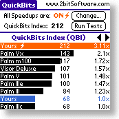

- complete -
You can also read about these by downloading the 3. 06 Online Help file and starting in the "What's New" section at its beginning. AdvancedChecker is a complete security scripting language for Windows NT. It can install, check, set and fix your network-wide security. A tool of unprecedented power and flexibility for large and small sites alike.
 |
All this translates into a snappier, more responsive Palm user interface. Learn more, download free trial version 1 Jan 98 - Pilot Software Development reorg I've had a lot of fun building and maintaining this site but over the last few months I've been pursuing non-Pilot projects and Pilot Software Development has fallen behind the times. My original vision for this site was to provide a complete reference to tools and resources available to Pilot programmers as well as up-to-date news of interest to Pilot software developers. These days the most complete reference for Pilot development tools and resources is Wade Hatler's excellent Pilot Programming FAQ. The FAQ has grown nicely and is now a much richer source of information than I've had time to provide. |
|
Conduct System Users' Guide Conduct System Users' Guide This Guide provides instructions on using University of Arizona Residence Life web-based Conduct system. Table of Contents Introduction Overview of the Conduct Program Entering a New Conduct Incident Witness Reports Administrative Tasks Published by The University of Arizona, Residence Life Information Services Unit, in conjunction with Residence Life Residental Education Unit. Every effort has been made to supply complete and accurate information. However, the University of Arizona and Residence Life Information Services assume no responsibility for its use. . |
|  |
The sequential programs may be written in any language, and CODE will produce parallel programs for a variety of architectures, as its model is architecture-independent. Subscribe to the CODE mailing list to receive e-mail notification of the release. Here is a complete list of CODE-related papers available on-line. Browne Group leader Dwip Banerjee Incorporation of dynamic data partitioning into the CODE model. Emery Berger An efficient implementation of CODE for clusters of SMPs based on MPI and threads. |
A site I really like: http://www.extremetech.com/category/0,3398,s=1039,00.asp